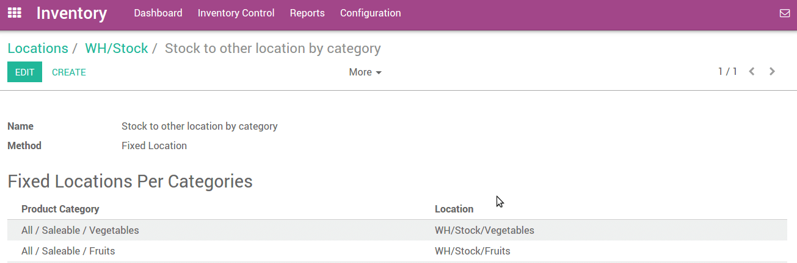

概述
好的仓库实施会考虑到把产品自动的调拨到正确的目的库位。下架就是把产品从收货的产品发出的过程，该过程把产品调拨到正确的库位。
以防仓库中含有化学性质不稳定的物品，就要确保这些产品在存放时不能放的太近，以防止发生化学反映。
上架策略和下架策略有着同样的原则，但是作用于目标库位。商家策略在库位层面定义(不像下架策略定义在产品层面那样)。
配置
进入：[UNKNOWN NODE problematic]库存 --> 配置 --> 设置`并选择**仓库管理多库位和产品使用高级路径**，然后点击**应用**。

设置一个策略
举个例子：一个卖蔬菜水果的零售商店
我们可以把该类型产品放在不同的位置并维护产品数量。
假设有一个仓库库位**WH/Stock**并且有一个下级库位 WH/Stock/Vegetables & WH/Stock/Fruits.
你可以创建一个上架策略，进入：[UNKNOWN NODE title_reference]。打开任何一个你想要设置上架策略的库位，点击**编辑**并选择**上架策略**。

打开滚动菜单并点击**创建并编辑**。这会打开一个上架策略的页面表单，在那里你可以设置上架策略，设置上架方法，固定库位等。
等你把所有必要信息输完之后，点击**保存**。
现在，当你要采购这些种类的产品时候，它们会自动的被移动到正确的库位。
要检查当前库存，进入：[UNKNOWN NODE problematic]库存 --> 库存控制 --> 当前库存 `
在那里 你可以看到库位中当前的存货